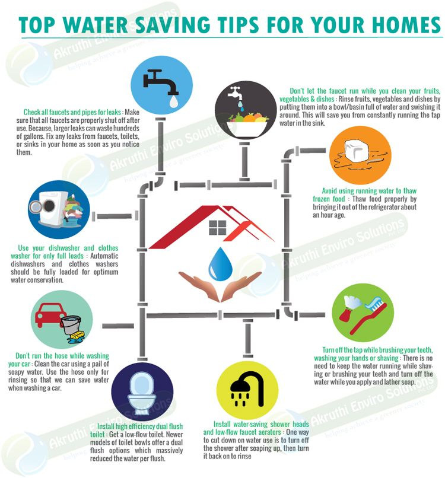

The Importance of Water Conservation: Protecting Our Most Valuable Resource
Water is the most important and valuable natural resource on Earth. It sustains all life. There is no life without water. Water is not only important for human beings but for the entire ecosystem. Without enough water, the existence of humans, as well as animals, is next to impossible. After fresh air, water is the second most important natural resource for the survival of any living being.
Water is necessary for the survival of each living creature on this planet, be it a small worm, plant, or full-grown tree. Animals and plants cannot survive without water. About 71% of Earth’s surface is covered with water. Unfortunately, only 3% of the water available is freshwater. About two-thirds of the freshwater lies in the form of frozen glaciers and ice caps. The rest of the small portion is available in the form of groundwater and surface water. Depletion of fresh water has become a threat to our existence. According to some scientists, the quantity and the quality of water are degrading day by day.
Although Earth is covered with almost 71% of water, the quality is that we cannot use it in day-to-day life for domestic purposes. Due to the increasing environmental pollution, the drops of water, which transmit life force to all the living beings, flora, and fauna of the earth, are becoming contaminated. Therefore, the crisis of clean drinking water is the biggest crisis for the existence of human beings on this earth. The only solution to this problem is to bring awareness, which requires immediate attention from individuals, institutions, and governments.
Man may reach the heights of material progress and scientific achievements, but his life is incomplete without water. It is necessary for all of us to understand that it is only through water conservation and water management that we can overcome this crisis which is threatening our existence. It is observed that the size of rivers and traditional water sources is reducing day by day. Man is destroying the natural and traditional sources of water due to his greediness. Due to indiscriminate urbanization and industrialization, pollution of underground water and rivers is continuously increasing as all toxic chemical substances (industrial wastes) are secreted into the river. This is giving rise to a shortage of clean drinking water.
If there is water, there is a future
The golden future of man does not depend on human settlements being built on the moon, but on pure natural drinking water. Pure drinking water is the golden future of humanity. Nature responds to our vibrations, and natural resources were pure and pristine during the Golden Age. The Golden age is the world where clean and pure water is available through natural sources. It has been proven by modern scientific researchers that the positive waves (vibes) generated by human thoughts make water pure and energetic.
Water conservation is essential for making the earth green by reducing deserts, expanding the continuously shrinking water streams of rivers, raising the underground water level, and for the well-being, progress, and prosperity of human beings. In order to conserve rainwater, motivate people to make ‘Rainwater Harvesting System’ in their house-courtyard, fields, open fields, etc. This step is the urgent need and call of the time. The underground water level can be raised by stopping the wasted water by making small dams. Groundwater can be used as per minimum requirement. This is also a meaningful step towards water conservation.
